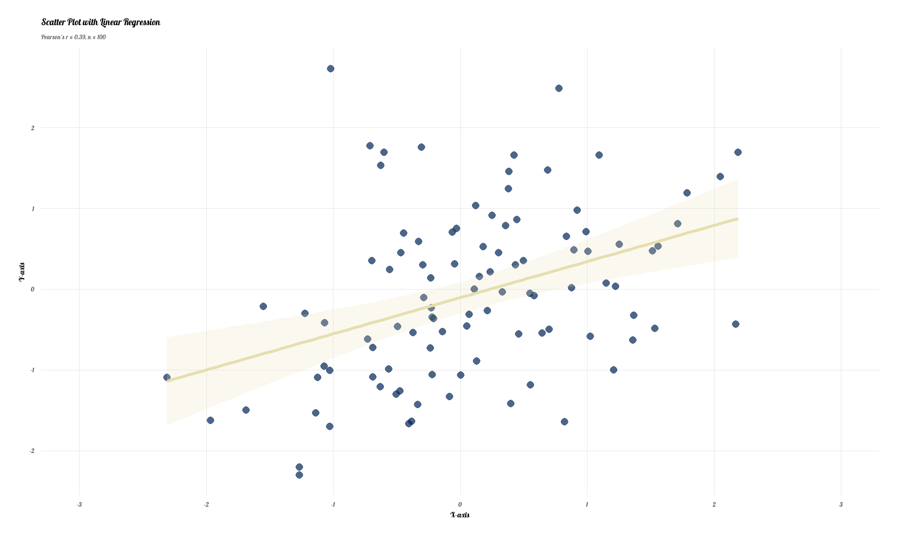
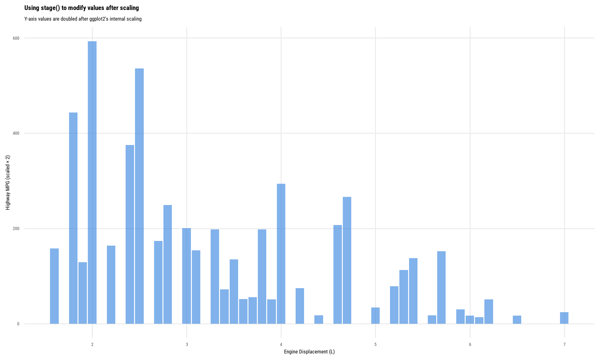
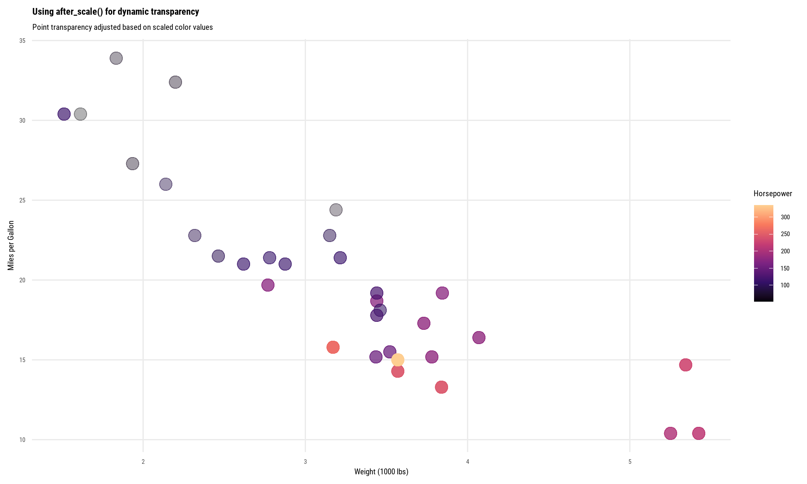
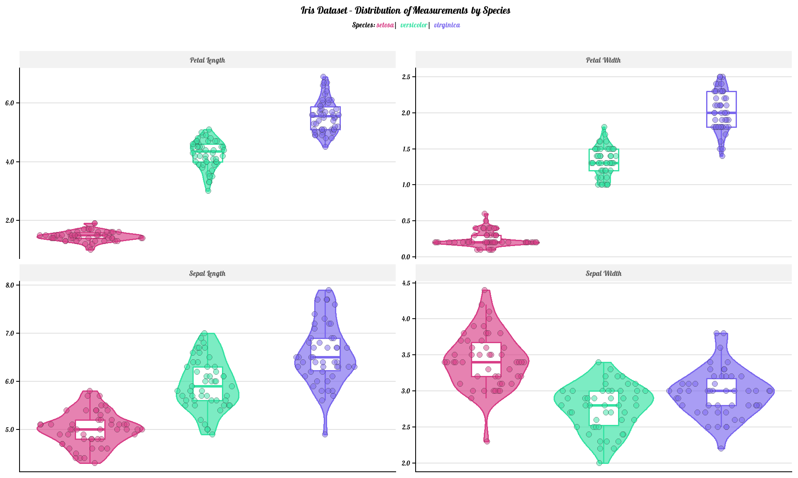

box::use(
ggplot2[...]
)1 Brief Introduction
The ggplot2 package is now over 18 years old (released way back in 2007) and has 2.2 million downloads per month, based on cranlogs. Thank you Hadley Wickham and co. for adapting “The Grammar of Graphics” by Leland Wilkinson into R programming language.
The things to be enumerated here are some brand new features and some hidden in plain sight. Here are my compilations of things you may or you may not know in ggplot2. But first, let us load the package through box:
2 1. Starting from 4.0.0, S7 is the new imported OO system
The 4.0.0 release of ggplot2 is now on CRAN few months ago (followed by 4.0.1 — published 18 days ago on November 14, 2025). This release introduces several significant updates, including a major internal shift: ggplot2 now imports the S7 object-oriented system, a new OO system, developed by the Object-Oriented Programming Working Group, R Consortium.
With this transition, several core internal objects, such as ggplot() and layer(), are now implemented using S7. However, the public-facing API remains largely S3-based, meaning that most users will experience the package exactly as before, with no changes required in existing code.
class({
ggplot(mtcars, aes(x = mpg, y = hp)) +
geom_point()
})Check out its class
[1] "ggplot2::ggplot" "ggplot" "ggplot2::gg" "S7_object"
[5] "gg" If you’re upgrading old projects, expect a few things to break (especially if you relied on internal structure). Lock your version with renv or groundhog until you’re ready.
This move to S7 represents the most substantial internal redesign of ggplot2 since the introduction of ggproto in 2015.
3 2. It has its own OO system: ggproto
Even with the latest 4.0.0 release, the actual layers, scales, coords, etc. are still held by ggproto objects. This is what makes ggplot2 so extensible. This OO system allows reference semantics and inheritance method — a classic OO programming scheme.
Wanna know how geom_smooth() secretly uses loess or gam? Just look at ggplot2:::StatSmooth$compute_group.
4 3. It has 5 ggplot2-based interactive viz
There are R packages that makes ggplot2 interactive, at least several:
| Package | Strength | Fidelity to static ggplot | Learning curve (verdict) |
|---|---|---|---|
| plotly | Dynamic and one-liner using ggplotly()
|
Medium (some features lost) | Low (1 star / easy to use) |
| ggiraph | Giving full control over tooltip / hover / click | Perfect | Very High (4 stars / difficult for non-native ggplot2 users) |
| ggiraphExtra | Shiny-integrated version of ggiraph | High | Fairly Low (2 stars / quick interactive) |
| gginteractive | Minimal code changes, HTMLwidget backend | High | Fairly Low (2 stars / not actively maintained) |
| ggvis (now a legacy) | Once the future, now archived | NULL (I don’t use it) | NULL (I don’t use it) |
| vegafacet (2025) | Vega-Lite | Fairly Low (not even ggplot2, but close) | Seriously high (5 stars / still new) |
A quick showcase of ggiraph:
Click to see the code
box::use(
ggiraph[geom_point_interactive, girafe, opts_hover, opts_hover_inv],
tibble[rownames_to_column],
glue[glue]
)
p =
mtcars |>
rownames_to_column(var = "car") |>
ggplot(aes(wt, mpg, color = factor(cyl))) +
geom_point_interactive(
aes(
tooltip = glue("{car} (wt: {wt}; mpg: {mpg})"),
data_id = car
),
size = 4
) +
theme_minimal(base_size = 14)
girafe(
ggobj = p,
width_svg = 10,
height_svg = 6,
options = list(
opts_hover(css = "fill:yellow;stroke:black;stroke-width:2;cursor:pointer;"),
opts_hover_inv(css = "opacity:0.3;")
)
)5 4. Customized fonts
Font styles to be used in your plot is not limited to the fonts you had in your system — this includes the font found in the web, such as Google fonts.
Thanks to sysfonts, you can do:
sysfonts::font_add_google("Lobster", "lobster")
sysfonts::font_add_google("Roboto Condensed", "roboto")
showtext::showtext_auto()Then use it as the base font family of the whole plot:
Click to see the code
ggplot(mtcars, aes(mpg, hp)) +
geom_point(color = "#C70039", size = 3) +
labs(
title = "This title is in Lobster font",
subtitle = "And the rest of the text too if you want"
) +
theme_minimal(base_size = 20, base_family = "lobster") +
theme(
plot.subtitle = element_text(color = "grey40", size = 13),
panel.grid.minor = element_blank(),
panel.grid.major = element_line(color = "grey90", linewidth = 0.3),
axis.title = element_text(face = "bold"),
axis.text = element_text(color = "grey30")
)
6 5. ggplot2 works perfectly without a data frame
R’s metaprogramming and its environment semantics is so handy but sometimes quirky: they’re so noble in data analysis and statistical modelling, but sometimes they’re so hard to predict. In many cases when it comes to working with data in R, NSE or the non-standard evaluation is used and one of the core features in tidyverse.
Many tutorials and documentations show how to use ggplot2 with data frames, but do you know that it is still fine to use ggplot2 without providing a data frame?
The demo:
Click to see the code
set.seed(123)
x = rnorm(100)
y = rnorm(100) + 0.5 * x
ggplot() + # This is always required! No need to put a data frame
aes(x, y) +
geom_point(
color = "#002455",
size = 2.5,
alpha = 0.7,
shape = 16
) +
geom_smooth(
method = "lm",
se = TRUE,
color = "#E7DEAF",
fill = "#E7DEAF",
alpha = 0.2,
linewidth = 1.2
) +
labs(
x = "X-axis",
y = "Y-axis",
title = "Scatter Plot with Linear Regression",
subtitle = paste0(
"Pearson's r = ", round(cor(x, y), 3), ", ",
"n = ", length(x)
)
) +
scale_x_continuous(
breaks = seq(-3, 3, 1),
limits = c(-3, 3)
) +
scale_y_continuous(
breaks = seq(-3, 3, 1)
) +
theme_minimal(base_size = 12, base_family = "lobster") +
theme(
plot.title = element_text(face = "bold", size = 14),
plot.subtitle = element_text(color = "grey40", size = 10),
panel.grid.minor = element_blank(),
panel.grid.major = element_line(color = "grey90", linewidth = 0.3),
axis.title = element_text(face = "bold"),
axis.text = element_text(color = "grey30"),
plot.margin = margin(15, 15, 15, 15)
)
Although I still recommend providing a data frame since that’s how ggplot2 is designed to be used — especially in many tutorials and documentations.
7 6. The art of delay
You may haven’t encounter this but there are 3 particular functions that manipulates aesthetic evaluation:
-
stage()lets you delay the evaluation of aesthetics until the plot is drawn.TipSimple demoggplot(mpg, aes(x = displ)) + geom_bar( aes( y = stage( start = hwy, after_scale = y * 2 ) ), stat = "identity", fill = "#4A90E2", alpha = 0.7 ) + labs( title = "Using stage() to modify values after scaling", subtitle = "Y-axis values are doubled after ggplot2's internal scaling", x = "Engine Displacement (L)", y = "Highway MPG (scaled × 2)" ) + theme_minimal(base_family = "roboto", base_size = 13) + theme( plot.title = element_text(face = "bold"), panel.grid.minor = element_blank() )
-
after_stat()enables you to modify aesthetics based on computed statistics after they have been calculated.TipSimple demoggplot(mpg, aes(x = hwy)) + geom_histogram( aes( y = after_stat(density), fill = after_stat(count) ), bins = 30, color = "white", linewidth = 0.2 ) + scale_fill_viridis_c(option = "plasma") + labs( title = "Histogram with after_stat()", subtitle = "Y-axis shows density, fill color shows count", x = "Highway MPG", y = "Density", fill = "Count" ) + theme_minimal(base_size = 14, base_family = "roboto") + theme( plot.title = element_text(face = "bold"), legend.position = "right" )
-
after_scale()allows you to modify aesthetics after they have been scaled but before they are rendered.TipSimple demoggplot(mtcars, aes(x = wt, y = mpg)) + geom_point( aes( color = hp, alpha = after_scale(scales::rescale(as.numeric(factor(color)), to = c(0.3, 1))) ), size = 5 ) + scale_color_viridis_c(option = "magma", end = 0.9) + labs( title = "Using after_scale() for dynamic transparency", subtitle = "Point transparency adjusted based on scaled color values", x = "Weight (1000 lbs)", y = "Miles per Gallon", color = "Horsepower" ) + theme_minimal(base_size = 14, base_family = "roboto") + theme( plot.title = element_text(face = "bold"), panel.grid.minor = element_blank() )
These are particularly useful when you want to create plots that depend on dynamic data or when you want to modify aesthetics based on user input in interactive applications.
This feature in ggplot2 is available in version 3.5.0 and later.
8 7. Markdown within {ggplot2} text elements
What I like about ggtext is the ability to use markdown syntax within ggplot2 text elements, such as titles, subtitles, captions, and axis labels. This means you can easily format your text to include bold, italic, code, and even links directly within your plots.
Click to see the code
box::use(
ggtext[element_markdown],
dplyr[mutate],
tidyr[long = pivot_longer],
stringr[replace_all = str_replace_all, to_title = str_to_title]
)
iris_colors = c(
setosa = "#D83F87",
versicolor = "#36E2A3",
virginica = "#7B68EE"
)
iris |>
mutate(
Species = factor(
Species,
levels = c("setosa", "versicolor", "virginica"))
) |>
long(
cols = where(is.numeric),
names_to = "features",
values_to = "sizes"
) |>
mutate(
features = to_title(replace_all(features, "\\.", " "))
) |>
ggplot(aes(x = Species, y = sizes, color = Species, fill = Species)) +
geom_violin(alpha = 0.65, linewidth = 0.6) +
geom_boxplot(
width = 0.25,
outlier.alpha = 0,
linewidth = 0.6,
fill = "white"
) +
ggforce::geom_sina(
alpha = 0.5,
size = 2.2,
shape = 21,
color = "gray20",
stroke = 0.4
) +
scale_color_manual(values = iris_colors) +
scale_fill_manual(values = iris_colors) +
scale_y_continuous(labels = scales::label_number(accuracy = 0.1)) +
facet_wrap(~ features, scales = "free_y", ncol = 2) +
labs(
title = "<b>Iris Dataset – Distribution of Measurements by Species</b>",
subtitle = paste0(
"Species: <span style='color:#D83F87;'>**setosa**</span> | ",
"<span style='color:#36E2A3;'>**versicolor**</span> | ",
"<span style='color:#7B68EE;'>**virginica**</span>"
),
x = NULL,
y = NULL
) +
theme_classic(base_family = "lobster") +
theme(
plot.title = element_markdown(hjust = 0.5, size = 18),
plot.subtitle = element_markdown(
hjust = 0.5, size = 13, margin = margin(b = 20)
),
strip.text = element_text(size = 13, face = "bold", color = "gray30"),
strip.background = element_rect(fill = "gray95", color = NA),
axis.text.x = element_blank(), # element_text(size = 12)
axis.text.y = element_text(size = 11),
axis.ticks.x = element_blank(),
panel.grid.major.y = element_line(color = "gray88", linewidth = 0.4),
# panel.grid.minor.y = element_line(color = "gray94", linewidth = 0.25),
legend.position = "none"
)
The element_markdown() function replaces standard theme text elements and parses markdown/HTML. You can use:
- Markdown:
**bold**,*italic*,`code` - HTML tags:
<span>,<br>,<sup>,<sub>, and more - Inline CSS:
<span style='color:red;'>colored text</span>